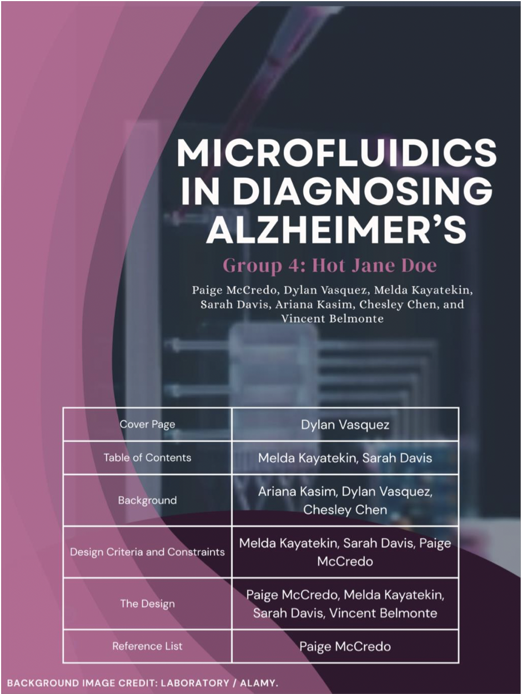
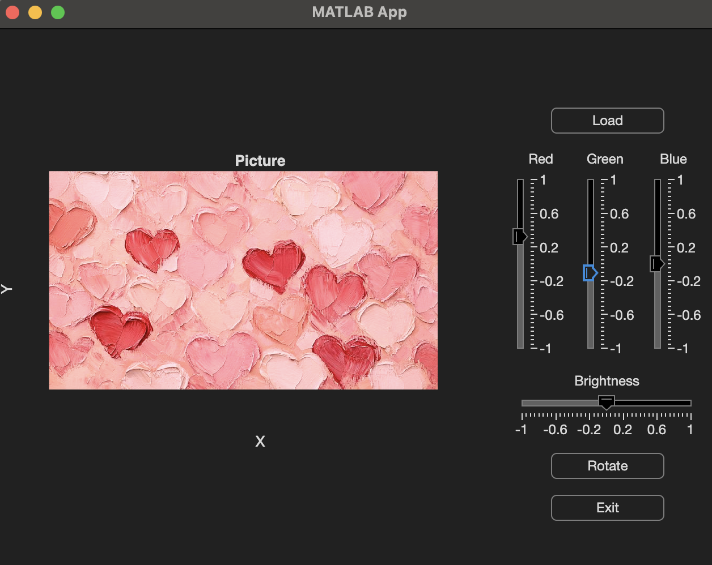
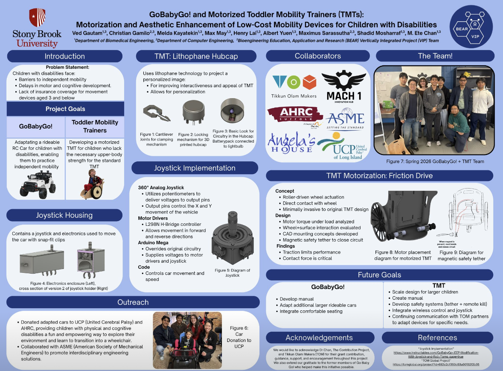
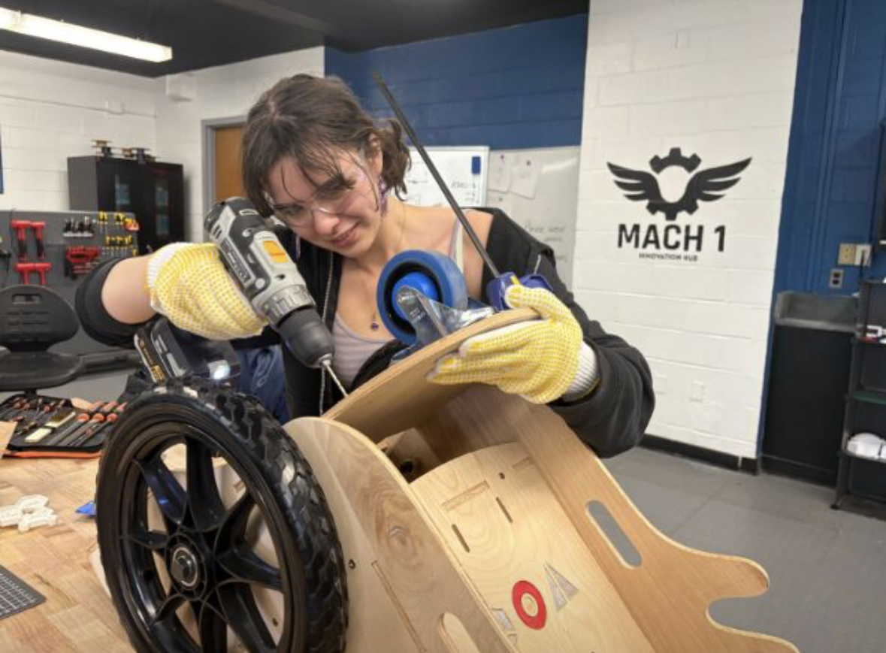
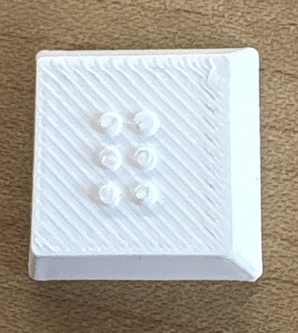
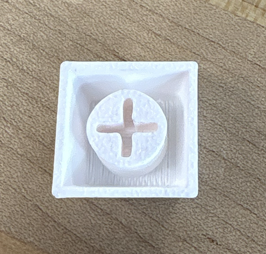

Designing medical devices that hold up under real use.
I'm Melda Kayatekin, a biomedical engineering student focused on medical device design: from early concept sketches through prototyping, bench testing, and design-control documentation.
About
01 — backgroundI'm a student studying Biomedical Engineering at Stony Brook, concentrating in medical device design. I'm drawn to the constraints that make this field hard and to turning those constraints into good design decisions for those who need it most, rather than treating them as red impossible tape.
Outside coursework, I work as a Team Lead for a research team on daily assistive technology, and I'm part of the Biomedical Engineering Society chapter. I like projects that go from a whiteboard sketch to something I can actually hold and test.
- Program
- B.E. Biomedical Engineering
- Expected grad.
- May 2028
- Track
- Medical Device Design
- Based in
- Astoria, New York
- Open to
- Internships, co-ops
Selected work
02 — projects
Microfluidic Systems in Diagnosing Alzheimer's: A Theoretical Design
A microfluidic biosensor implanted along the spinal cord for early Alzheimer's detection, using a quartz/fused silica chip with enzyme-coated electrochemical sensors to detect Aβ-40, Aβ-42, and p-tau biomarkers in cerebrospinal fluid, then wirelessly transmit results via a Nano FM transmitter to a smartphone or smartwatch. The design prioritizes minimally invasive, low-cost, continuous biomarker monitoring over costly one-time imaging or lumbar puncture methods, using enzyme-based sensing for reusability and laser-etched glass microchannels for biocompatibility and long-term implant stability.

MATLAB App Designer GUI for interactive image editing
An interactive image editing tool built in MATLAB App Designer that lets users load an image and adjust it in real time using RGB channel sliders, a brightness slider, and a rotate function, with each control immediately updating the displayed image. The project demonstrates GUI design and digital image processing fundamentals, including reading and manipulating pixel data, applying channel specific and brightness transformations, and handling image rotation, all through a clean, user driven interface.


Motorized Toddler Mobility Trainer
A motorized upgrade to standard Toddler Mobility Trainers (TMTs), giving children who lack the upper body strength for a manual TMT access to independent movement through a friction drive system that applies roller driven wheel actuation directly to the existing wheel, controlled by a 360 degree analog joystick wired through an Arduino Mega and an L298N H bridge motor driver, with a magnetic safety tether that breaks the circuit if the child is pulled away. Motor torque and wheel to surface contact force were analyzed under load to guide CAD mounting design, since traction was found to be the main performance constraint.



3D printed Braille Keyboard with audio channel
A 3D printed Braille keyboard designed from scratch in AutoCAD, with custom keycaps embossed in Braille for tactile typing. The project is in progress, currently focused on integrating a voice sensor channel that will audibly announce each key as it is typed, adding a real time feedback layer for users who are blind or visually impaired.
Technical toolkit
03 — skillsDesign & prototyping
- SolidWorksproficient
- Iterative prototypingproficient
- Technical documentationproficient
Lab skills
- Protocol developmentproficient
- Biological sample processingworking
- Literature reviewproficient
Programming
- Pythonworking
- Javaworking
- C++working
Tools
- Excel / data analysisproficient
- Canvaworking
- Google Workspaceproficient
Timeline
04 — experienceUndergraduate Researcher
Design and execute molecular bioengineering experiments supporting CRISPR-based gene editing and gene therapy research.
Prototyping Fellow
Design and prototype assistive medical devices for specific patient needs, from concept through functional build.
Team Lead, VIP BEAR
Oversee motorized Toddler Mobility Trainer adaptations for children with cerebral palsy, in partnership with United Cerebral Palsy.
Started B.E. in Biomedical Engineering
Presidential Scholarship recipient; graduated from The Bronx High School of Science.
Let's talk devices.
Open to internships, co-ops, and research collaborations in medical device design.
Email me- Emailmeldakayatekin@gmail.com
- Phone(646) 804-8842
- ResumeFiles/Melda_Kayatekin_Resume.pdf